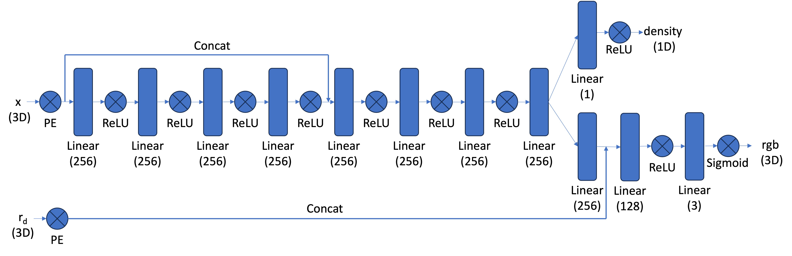

Neural Radiance Field!
This project aims to build a simple neural radiance field.
Part 0: Calibrating Your Camera and Capturing a 3D Scan
4 sections in total-
Before training a NeRF, we need to know how every training image is geometrically related to the 3D scene. A 3D point is first transformed from the world coordinate system into the camera coordinate system, and is then projected onto the image plane.
\[ \boxed{ s \begin{bmatrix} u\\ v\\ 1 \end{bmatrix} = K \begin{bmatrix} R & t \end{bmatrix} \begin{bmatrix} X\\ Y\\ Z\\ 1 \end{bmatrix} } \]Here, \(K\) contains the intrinsic parameters of the camera. The rotation \(R\) and translation \(t\) describe the transformation from world coordinates to camera coordinates. The scalar \(s\) appears because perspective projection removes absolute depth.
Ignoring lens distortion for the moment, the intrinsic matrix can be written as
\[ K= \begin{bmatrix} f_x & 0 & c_x\\ 0 & f_y & c_y\\ 0 & 0 & 1 \end{bmatrix} \]The parameters \(f_x\) and \(f_y\) represent the focal length in pixel units, while \((c_x,c_y)\) gives the principal point. The derivation below first assumes this ideal pinhole camera model. Lens distortion will be introduced after we obtain an initial estimate of the camera intrinsics and poses.
From ArUco corners to geometric correspondences
To calibrate my camera, I printed the ArUco calibration target provided by the course and captured 49 images using my iPhone from different viewpoints, distances, and orientations.
The key advantage of a calibration board is that its geometry is known. Every ArUco corner therefore has a known position in the board coordinate system. Since the board is planar, I define that plane using \(Z=0\). A corner can therefore have a known coordinate \(\mathbf X_i=(X_i,Y_i,0)\).
Detecting the same corner in an image gives its pixel coordinate \(\mathbf p_i=(u_i,v_i)\). Each detected corner therefore produces a known correspondence between the physical board and the image.
\[ \boxed{ (X_i,Y_i,0) \longleftrightarrow (u_i,v_i) } \]Each calibration image contains many such correspondences. These known point pairs are the measurements from which the camera model will be recovered.
From one calibration image to one homography
Because every calibration point lies on the same plane, \(Z=0\). Writing the rotation matrix as \(R=[r_1\ r_2\ r_3]\), the general camera projection equation becomes
\[ s \begin{bmatrix} u\\ v\\ 1 \end{bmatrix} = K \begin{bmatrix} r_1 & r_2 & t \end{bmatrix} \begin{bmatrix} X\\ Y\\ 1 \end{bmatrix} \]The third rotation column \(r_3\) disappears because it would multiply the zero \(Z\) coordinate. The mapping between the calibration plane and the image can therefore be represented by a \(3\times3\) homography.
\[ \boxed{ H \sim K \begin{bmatrix} r_1 & r_2 & t \end{bmatrix} } \]\[ s \begin{bmatrix} u\\ v\\ 1 \end{bmatrix} = H \begin{bmatrix} X\\ Y\\ 1 \end{bmatrix} \]The symbol \(\sim\) indicates equality up to an arbitrary nonzero scale. A homography describes a projective mapping and is therefore only defined up to scale.
Write the homography as
\[ H= \begin{bmatrix} h_{11} & h_{12} & h_{13}\\ h_{21} & h_{22} & h_{23}\\ h_{31} & h_{32} & h_{33} \end{bmatrix} \]For a correspondence between \((X,Y)\) and \((u,v)\), perspective division gives
\[ u = \frac{ h_{11}X+h_{12}Y+h_{13} }{ h_{31}X+h_{32}Y+h_{33} } \]\[ v = \frac{ h_{21}X+h_{22}Y+h_{23} }{ h_{31}X+h_{32}Y+h_{33} } \]Multiplying out the denominators gives two equations that are linear in the entries of \(H\). Each detected ArUco corner therefore contributes two linear constraints.
\[ \begin{bmatrix} X & Y & 1 & 0 & 0 & 0 & -uX & -uY & -u \end{bmatrix} \mathbf h = 0 \]\[ \begin{bmatrix} 0 & 0 & 0 & X & Y & 1 & -vX & -vY & -v \end{bmatrix} \mathbf h = 0 \]Stacking the constraints from all detected corners in one image gives the first linear system in the calibration procedure.
\[ \boxed{ A\mathbf h=0 } \]Four noncollinear point correspondences are theoretically sufficient to determine a planar homography up to scale. In practice, many more corners are used to make the estimate more robust to detection noise.
Repeating this procedure independently for all 49 calibration images gives a collection of homographies
\[ \boxed{ H_1,H_2,\ldots,H_{49} } \]From multiple homographies to the intrinsic matrix
A single homography does not allow the intrinsic matrix and camera pose to be uniquely separated. The important observation in Zhang's method is that every calibration image has a different camera pose and therefore a different homography, while all images were captured by the same camera and therefore share the same intrinsic matrix \(K\).
For one calibration image, write
\[ H= \begin{bmatrix} h_1 & h_2 & h_3 \end{bmatrix} \]Since the homography is only defined up to scale, there exists a scalar \(\lambda\) such that
\[ h_1=\lambda Kr_1, \qquad h_2=\lambda Kr_2, \qquad h_3=\lambda Kt \]The first two columns \(r_1\) and \(r_2\) belong to a rotation matrix. They must therefore be orthogonal and have equal unit length.
\[ \boxed{ r_1^Tr_2=0 } \]\[ \boxed{ r_1^Tr_1=r_2^Tr_2 } \]From \(r_1\propto K^{-1}h_1\) and \(r_2\propto K^{-1}h_2\), these rotation properties can be converted into constraints on the unknown intrinsic matrix.
Define the symmetric matrix
\[ \boxed{ B=K^{-T}K^{-1} } \]The orthogonality and equal length constraints become
\[ \boxed{ h_1^TBh_2=0 } \]\[ \boxed{ h_1^TBh_1-h_2^TBh_2=0 } \]Since \(B\) is symmetric, it contains only six independent entries. These can be collected into a vector
\[ \mathbf b = \begin{bmatrix} B_{11} & B_{12} & B_{22} & B_{13} & B_{23} & B_{33} \end{bmatrix}^{T} \]Each calibration image contributes two linear constraints on the same vector \(\mathbf b\). Stacking the constraints from all calibration images gives the second linear system in Zhang's method.
\[ \boxed{ V\mathbf b=0 } \]Solving this system gives \(B\), and the relationship \(B=K^{-T}K^{-1}\) can then be used to recover the shared intrinsic matrix \(K\).
This also explains why calibration images should be captured from substantially different orientations. Different board poses provide independent geometric constraints, while repeatedly photographing almost the same pose would add mostly redundant information.
Recovering initial camera poses
Once \(K\) is known, each homography can be separated into the pose of the corresponding calibration image. For
\[ H= \begin{bmatrix} h_1 & h_2 & h_3 \end{bmatrix} \]the first two rotation axes and the translation are obtained up to one common normalization factor.
\[ \tilde r_1=K^{-1}h_1, \qquad \tilde r_2=K^{-1}h_2, \qquad \tilde t=K^{-1}h_3 \]A scale factor can be chosen so that the recovered rotation axes have unit length.
\[ \lambda \approx \frac{1}{\|\tilde r_1\|_2} \]\[ r_1=\lambda\tilde r_1, \qquad r_2=\lambda\tilde r_2, \qquad t=\lambda\tilde t \]Because the calibration board is planar, the homography does not contain the third rotation axis directly. It can be reconstructed from the first two axes using
\[ \boxed{ r_3=r_1\times r_2 } \]This gives an initial estimate of the full camera pose \(R=[r_1\ r_2\ r_3]\) and \(t\) for every calibration image. In practice, the recovered rotation is also adjusted to satisfy the exact orthonormality constraints of a valid rotation matrix.
Extending the pinhole model with lens distortion
The derivation so far assumes an ideal pinhole camera. A real iPhone lens does not follow this model perfectly. Radial distortion bends image locations increasingly strongly away from the optical center, while tangential distortion accounts for small misalignments between the lens and the image sensor.
Let \((x,y)\) denote normalized ideal pinhole coordinates and define
\[ r^2=x^2+y^2 \]A common OpenCV distortion model uses radial coefficients \(k_1,k_2,k_3\) and tangential coefficients \(p_1,p_2\). The distorted coordinates are modeled as
\[ \boxed{ \begin{aligned} x_d &= x \left( 1+k_1r^2+k_2r^4+k_3r^6 \right) + 2p_1xy + p_2(r^2+2x^2) \\[6pt] y_d &= y \left( 1+k_1r^2+k_2r^4+k_3r^6 \right) + p_1(r^2+2y^2) + 2p_2xy \end{aligned} } \]These distortion terms are nonlinear, which is why they were not included in the simple homography derivation above. Zhang's method first provides strong geometric estimates of \(K\) and the per image poses. These estimates can then initialize a more complete optimization that includes real lens distortion.
Nonlinear reprojection refinement
The linear stages provide good initial estimates, but the measurements still contain ArUco corner detection noise and the real camera includes nonlinear lens distortion. OpenCV therefore performs a final nonlinear least squares optimization.
The variables include the shared intrinsic matrix \(K\), the distortion parameters \(D\), and the rotation and translation of every calibration image.
\[ \theta = \left\{ K, D, R_1,t_1, \ldots, R_N,t_N \right\} \]For every known calibration point \(\mathbf X_i\) in image \(j\), the current camera model predicts a pixel location through the complete projection function \(\pi\). This prediction is compared with the ArUco corner actually detected in the image.
\[ \boxed{ \min_{\theta} \sum_j \sum_i \left\| \mathbf p_{ij} - \pi \left( K, D, R_j, t_j, \mathbf X_i \right) \right\|_2^2 } \]The optimizer repeatedly adjusts these parameters so that the projected calibration points move closer to their observed pixel locations. Unlike the previous linear systems, this step directly minimizes the image space reprojection error under the complete camera model.
The full calibration process can therefore be summarized as
\[ \boxed{ \begin{gathered} \text{ArUCo Corner Correspondences} \rightarrow \text{Homography for Each View} \\ \rightarrow \text{Shared Intrinsic Matrix }K \rightarrow \text{Initial Camera Poses} \\ \rightarrow \text{Lens Distortion Model} \rightarrow \text{Nonlinear Reprojection Refinement} \end{gathered} } \] Camera calibration dataset
Camera calibration dataset Estimated camera parameters
Estimated camera parametersUsing the 49 calibration images, the resulting camera model produced a reported reprojection error of \(0.6337\) pixels. A relatively small reprojection error indicates that the final camera model projects the known calibration points close to the locations detected in the real images.
The optimized intrinsic matrix and distortion coefficients were saved in
camera_params.npzand reused throughout the remainder of the project.It is important to distinguish this intrinsic calibration stage from the later pose estimation stage. The 49 calibration images are used to determine the shared camera intrinsics and lens distortion. When collecting the actual NeRF images later, these parameters are already known.
For each NeRF image, the visible ArUco marker then provides new 3D to 2D correspondences. With \(K\) and the distortion model already calibrated, PnP only needs to recover the rotation and translation of that particular image.
\[ \boxed{ K,D + \text{ArUCo Correspondences in Image }j \rightarrow R_j,t_j } \]This separation gives us the two types of camera information required by NeRF. The intrinsic parameters describe how the camera forms an image, while the per image extrinsics describe where the camera was located and how it was oriented when that image was captured.
With the camera intrinsics calibrated, the next step is to collect the multi-view images that will later supervise the NeRF. I chose two pine cones as the scene and captured 52 images from different viewpoints while keeping an ArUco marker visible in the scene.
Multiple viewpoints are essential because a single image does not uniquely determine the 3D structure of a scene. Under perspective projection, different 3D points along the same camera ray can project to the same image location. Observations from different camera centers provide the parallax needed to constrain the underlying geometry.
Classical stereo methods explicitly recover depth by matching corresponding image points across multiple views. NeRF takes a different approach. It does not explicitly triangulate every scene point before training. Instead, it optimizes a continuous volumetric scene representation so that rendered views agree with all observed training images.
Nevertheless, NeRF still requires the camera corresponding to each image to be known. Therefore, the ArUco marker is included in the captured images so that its known 3D geometry can later be used to estimate the camera pose of each frame.


The goal during data collection is to obtain sufficient viewpoint coverage around the object while maintaining a consistent and mostly static scene. Better coverage gives the model stronger constraints when learning the geometry and appearance of the object from different viewing directions.
After Part 0.1, the intrinsic matrix \(K\) and lens distortion parameters \(D\) of my camera are already known. However, every NeRF source image was captured from a different camera position and orientation. We therefore still need to estimate the camera pose associated with each individual image.
I kept an ArUco marker visible while capturing the object. Since the physical size and geometry of the marker are known, the 3D coordinates of its corners can be defined in the world coordinate system. The same corners can also be detected as 2D pixel locations in every captured image.
Here, \(\mathbf X_i\) is a known 3D ArUco corner and \(\mathbf p_i^{\mathrm{obs}}\) is its detected pixel position in the current image. These 3D to 2D correspondences allow us to solve the Perspective n Point problem.
An important detail is that the observed pixels come from the original camera image and therefore still contain lens distortion. For this reason, PnP uses both the calibrated intrinsic matrix \(K\) and the distortion parameters \(D\).
For a candidate camera pose, a known world point is first transformed into the camera coordinate system
The complete camera model then performs perspective projection, lens distortion, and intrinsic projection to predict where this point should appear in the original image. I use the symbol \(\pi\) to represent this complete projection operation.
PnP searches for the rotation and translation that make the predicted ArUco corner locations agree as closely as possible with the corners actually detected in the image.
In my implementation, I use
cv2.solvePnP() with the known ArUco object points,
the detected image points, the calibrated camera matrix,
and the distortion coefficients.
OpenCV returns a rotation vector and a translation vector.
The rotation vector can be converted into a \(3\times3\)
rotation matrix using cv2.Rodrigues().
The recovered rotation and translation describe the mapping from the world coordinate system into the camera coordinate system.
In homogeneous coordinates, this transformation can be written as
NeRF ray construction later works in the opposite direction. We will start with a ray defined in the camera coordinate system and transform it into the shared world coordinate system. I therefore store the inverse transformation
Since \(R\) is a rotation matrix, its inverse is its transpose. The camera to world transformation can therefore also be written as
The translation component of this matrix gives the camera center in world coordinates.
It is important to note that lens distortion is only used when relating 3D scene points to their observed 2D image locations. It does not modify the rigid world to camera transformation and it does not participate in the matrix inversion above.
I estimated the pose of every valid NeRF source image and visualized the resulting camera frustums in Viser. Since the images were captured while moving around the pine cones, the recovered camera centers should surround the scene and their viewing directions should point toward the target region.


The visualization acts as a geometric sanity check. The recovered cameras form a roughly circular arrangement around the scene and their frustums point toward the objects. This behavior is consistent with the way the dataset was captured and suggests that the estimated poses are geometrically reasonable.
At this point, each source image has an associated camera pose. The next step is not to refine this pose further. Instead, we will correct the geometry of the RGB images themselves so that their pixels follow the ideal pinhole model assumed by NeRF.
The camera poses recovered in Part 0.3 are now known, but the original RGB images still contain radial and tangential lens distortion. This is inconvenient for NeRF because the ray construction used later assumes an ideal pinhole camera.
In an ideal pinhole camera, an undistorted pixel \((u,v)\) can be converted directly into a direction in the camera coordinate system using the inverse intrinsic matrix.
This relationship does not hold directly for a distorted pixel \((u_d,v_d)\). Lens distortion has shifted that pixel away from the location predicted by the ideal perspective projection model. Using the distorted coordinates directly with \(K^{-1}\) would therefore produce an incorrect ray direction.
I use the distortion parameters estimated in Part 0.1 to remap each original RGB image into an undistorted image.
Conceptually, this operation moves the observed RGB values onto the pixel grid of an ideal pinhole camera. After this correction, every pixel coordinate in the new image can again be interpreted using the standard perspective camera model.
In my implementation, I also compute a new intrinsic matrix using
cv2.getOptimalNewCameraMatrix().
Undistortion can introduce invalid regions near the image
boundaries, so the image can be cropped to a valid region of
interest.
When cropping changes the image coordinate origin, the principal
point must be shifted by the same crop offset.
The resulting \(K_{\mathrm{new}}\) is therefore the intrinsic matrix corresponding to the final undistorted and cropped images. This is the matrix that should later be used when constructing NeRF rays.
At this point, the two pieces of geometric preparation can be combined. Part 0.3 provides the camera to world transformation \(T_{\mathrm{c2w}}^{(i)}\) for every image. Part 0.4 provides an undistorted image and its corresponding intrinsic matrix \(K_{\mathrm{new}}\).
These quantities contain everything required to construct the rays used during NeRF training. For a pixel \((u,v)\), the inverse intrinsic matrix first back projects the pixel into a camera frame direction.
The rotation contained in \(T_{\mathrm{c2w}}\) then transforms this direction into the world coordinate system.
The ray origin is simply the camera center stored in the translation component of \(T_{\mathrm{c2w}}\).
After normalizing the ray direction, the complete world space ray is
The RGB image itself does not determine the ray direction. Instead, once a ray has been constructed from its pixel coordinate, the corresponding pixel in the undistorted image provides the ground truth color for that ray.
A NeRF training observation can therefore ultimately be represented by a world space ray origin, a world space ray direction, and the observed RGB color.
I then split the processed images and camera poses into training, validation, and test subsets and saved them in the dataset format required by the later NeRF implementation.

The complete geometric preparation process can be summarized as
Distortion is therefore handled before NeRF ray construction. It is used during PnP so that the raw ArUco observations can produce accurate camera poses, and it is used again to rectify the RGB images. Once the images have been undistorted, the later NeRF pipeline no longer needs an explicit distortion model.
Part 1. Fitting a Neural Field to a 2D Image
1 section in total-
Neural Field and Positional Encoding
Before moving on to 3D NeRF, we first explore a simpler problem. Can a neural network represent an entire 2D image as a continuous function?
Conventionally, an image is stored as a discrete array of RGB values. A Neural Field takes a different approach. Instead of directly storing the color of every pixel, we train a coordinate based MLP that maps a spatial location to its corresponding color.
\[ \boxed{ F_\theta:(u,v)\longrightarrow(r,g,b) } \]Here, \((u,v)\) denotes a normalized pixel coordinate, and \((r,g,b)\) is its corresponding RGB color. By learning this mapping, the image is implicitly represented by the parameters of the network. We can then reconstruct the image by querying the trained MLP at all pixel coordinates.
However, directly feeding raw coordinates into a standard MLP introduces a challenge. Neural networks tend to learn smooth, low frequency functions more easily than rapidly changing, high frequency patterns. This phenomenon is commonly referred to as spectral bias.
For image reconstruction, this means that a standard MLP may recover large color regions and coarse structures relatively easily, while struggling to reproduce sharp edges and fine textures.
To address this limitation, NeRF introduces Sinusoidal Positional Encoding. Rather than using the original coordinates alone, we first project them into a higher dimensional space using sinusoidal functions at multiple frequencies.
\[ \begin{aligned} \gamma_L(p)= \big[ &p,\\ &\sin(2^0\pi p),\cos(2^0\pi p),\\ &\sin(2^1\pi p),\cos(2^1\pi p),\\ &\ldots,\\ &\sin(2^{L-1}\pi p), \cos(2^{L-1}\pi p) \big] \end{aligned} \]Here, \(p=(u,v)\), and \(L\) controls the number of frequency bands. The encoding provides the MLP with explicit features at different spatial frequencies, making it easier to learn both smooth regions and rapidly varying details.
In my implementation, I use \(L=10\). Since each frequency contributes both sine and cosine features for the two input coordinates, while also retaining the original coordinates, the input dimension becomes
\[ D_{\mathrm{input}} = 2+2\times2L = 42 \]I implemented a four layer MLP with a hidden width of 256 and a learning rate of \(10^{-2}\). The network takes the positionally encoded coordinates as input and predicts normalized RGB values.
\[ \boxed{ \hat{\mathbf c} = F_\theta(\gamma_L(u,v)) } \]A final Sigmoid activation constrains the output to the valid normalized RGB range between 0 and 1. The model architecture and training configuration are shown below.
 MLP architecture and training configuration
MLP architecture and training configuration -
Training and Reconstruction
To train the neural field, I randomly sample a batch of pixel coordinates from the target image at each iteration, together with their corresponding ground truth RGB values.
Both the coordinates and RGB values are normalized to the range between 0 and 1. The MLP is then optimized to minimize the Mean Squared Error between its predicted colors and the original pixel colors.
\[ \boxed{ \mathcal L(\theta) = \frac{1}{N} \sum_{i=1}^{N} \left\| F_\theta(\gamma_L(\mathbf p_i)) - \mathbf c_i \right\|_2^2 } \]Here, \(\mathbf p_i\) is a sampled pixel coordinate, \(\mathbf c_i\) is its ground truth RGB value, and \(N\) is the number of sampled pixels. The expression represents the squared RGB error averaged over sampled pixels.
During training, the network gradually learns the spatial color distribution of the image. To visualize this process, I periodically queried the model over the full image coordinate grid and reconstructed the corresponding image.
I tested this configuration on two images, the provided Fox image and a Breakfast image of my own choice.
Experiment 1. Fox Image Reconstruction
 Original Fox Image
Original Fox Image Final Neural Field Reconstruction
Final Neural Field ReconstructionThe following images show how the reconstruction evolves throughout training.
 Iteration 1
Iteration 1 Iteration 50
Iteration 50 Iteration 100
Iteration 100 Iteration 200
Iteration 200At the beginning of training, the network has not yet learned the relationship between spatial coordinates and image colors, so its predictions contain little recognizable structure. As training progresses, the broad color regions and the overall shape of the fox gradually emerge. Finer details become more apparent as the model continues fitting the target image.
Experiment 2. Breakfast Image Reconstruction
I repeated the same experiment on the Breakfast image to verify that the neural field can fit a different visual composition using the same architecture.
 Original Breakfast Image
Original Breakfast Image Final Neural Field Reconstruction
Final Neural Field Reconstruction Iteration 1
Iteration 1 Iteration 50
Iteration 50 Iteration 100
Iteration 100 Iteration 300
Iteration 300Similar to the Fox experiment, the model progressively recovers the global color distribution and spatial structures before refining smaller visual details. These experiments demonstrate that a coordinate based MLP can represent different 2D images through their learned network parameters.
-
Quantitative Evaluation
Besides visually comparing the reconstructed images, I also evaluated the reconstruction quality using Peak Signal to Noise Ratio, commonly known as PSNR.
PSNR is derived from the pixelwise reconstruction error. For images normalized to the range between 0 and 1, it can be calculated as
\[ \boxed{ \operatorname{PSNR} = 10\log_{10} \left( \frac{1}{\operatorname{MSE}} \right) } \]A higher PSNR indicates a smaller reconstruction error and therefore better agreement with the original image. Unlike the visual snapshots, the PSNR curves provide a quantitative view of how reconstruction quality changes throughout optimization.
 Fox Reconstruction PSNR
Fox Reconstruction PSNR Breakfast Reconstruction PSNR
Breakfast Reconstruction PSNRThe curves show the improvement in reconstruction quality as the network is optimized. Together with the intermediate images shown above, they illustrate how the MLP progressively fits the target color function through supervised coordinate based learning.
-
Positional Encoding and Width Ablation
Finally, I investigated how the positional encoding frequency and network width influence reconstruction quality.
As discussed earlier, positional encoding provides the MLP with input features at different spatial frequencies, while the network width determines its hidden feature capacity. I compared two frequency settings and two network widths, resulting in four configurations.
\[ L\in\{4,10\}, \qquad W\in\{64,256\} \]The final reconstructions under these four configurations are shown below.
 L = 4, W = 64
L = 4, W = 64 L = 4, W = 256
L = 4, W = 256 L = 10, W = 64
L = 10, W = 256
L = 10, W = 64
L = 10, W = 256Effect of Positional Encoding Frequency
When \(L=4\), the positional encoding contains fewer high frequency components. The reconstructed images capture the main color distribution and broad image structures, but many fine details appear relatively smooth. Increasing the network width alone provides some improvement, but does not fully compensate for the limited frequency representation.
Increasing the encoding level to \(L=10\) introduces additional high frequency features, allowing the MLP to fit sharper transitions, boundaries, and finer textures more effectively. This is consistent with the motivation behind using Fourier features to alleviate the spectral bias of standard MLPs.
Effect of Network Width
The width \(W\) controls the dimensionality of the hidden representations. A narrower network with \(W=64\) has fewer learnable parameters and may struggle to fit the full complexity of the target image within the same training budget.
Increasing the width to \(W=256\) provides greater representational capacity and improves the reconstruction, particularly when combined with sufficiently rich positional encoding.
Among the four tested configurations, \(L=10\) and \(W=256\) produced the cleanest and most detailed reconstruction.
Overall, these experiments highlight two complementary aspects of coordinate based neural representations. Positional encoding determines which spatial frequencies are explicitly exposed to the network, while the MLP architecture determines its capacity to learn a mapping from those features to the target colors.
This also provides a useful foundation for the following NeRF implementation. Instead of mapping 2D coordinates directly to RGB, we will extend the same idea into 3D space, where a neural network predicts volumetric density and view dependent color for differentiable rendering.
Part 2: Fit a Neural Radiance Field from Multi-view Images
6 sections in total-
Camera Rays
Having explored how a neural network can represent a continuous 2D image, we can now extend this idea to a 3D scene. Unlike Part 1, where each pixel directly corresponds to a 2D coordinate, NeRF must determine how different locations in 3D contribute to the observed color of a pixel.
This requires constructing a ray for every image pixel using the calibrated camera parameters. Recall that in Part 0, we studied how a 3D world point is projected onto the image plane. Here, we perform the inverse operation known as back projection.
A single pixel cannot uniquely determine a 3D point because its depth is unknown. However, given the camera intrinsics and extrinsics, we can determine the corresponding ray originating from the camera center.
\[ \boxed{ \mathbf r(s)=\mathbf r_o+s\mathbf r_d } \]Here, \(\mathbf r_o\) represents the ray origin, \(\mathbf r_d\) is its normalized direction, and \(s\) describes the distance along the ray. Every possible 3D point observed through a particular pixel lies somewhere along this ray.
I implemented the ray construction pipeline using three functions.
Camera to World Transformation
First, I implemented
transform(c2w, x_c)to convert a point from camera coordinates to world coordinates.Given the camera to world transformation obtained from the calibrated camera pose, the conversion is expressed as
\[ \boxed{ \mathbf x_w = R_{\mathrm{c2w}}\mathbf x_c + \mathbf t_{\mathrm{c2w}} } \]Here, \(R_{\mathrm{c2w}}\) and \(\mathbf t_{\mathrm{c2w}}\) are the rotation and translation components of the camera to world transformation. This allows us to express points observed by different cameras within the same global coordinate system.
Pixel Back Projection
Next, I implemented
pixel_to_camera(K, uv, s)to recover a 3D point in camera coordinates from a pixel location at a specified depth.Recall the perspective projection equation from Part 0.
\[ s \begin{bmatrix} u\\ v\\ 1 \end{bmatrix} = K \begin{bmatrix} x_c\\ y_c\\ z_c \end{bmatrix} \]By multiplying both sides by the inverse intrinsic matrix, we obtain
\[ \boxed{ \mathbf x_c = sK^{-1} \begin{bmatrix} u\\ v\\ 1 \end{bmatrix} } \]Here, \(s=z_c\) is the depth along the camera optical axis. Choosing different positive values of \(s\) produces different 3D points that project onto the same pixel.
Pixel to Ray Conversion
Finally, I combined the previous two functions into
pixel_to_ray(K, c2w, uv, depth)to obtain the world space ray corresponding to each pixel.The ray origin is simply the camera center in world coordinates, which corresponds to the translation component of the camera to world matrix.
\[ \mathbf r_o = \mathbf t_{\mathrm{c2w}} \]To obtain the ray direction, we can choose any positive camera depth, such as \(s=1\), back project the pixel into camera coordinates, and then transform the resulting point into world coordinates.
Since we are representing each pixel by its center rather than its upper left corner, I add an offset of 0.5 to the integer pixel coordinates before back projection.
\[ \tilde{\mathbf p} = \begin{bmatrix} u+0.5\\ v+0.5\\ 1 \end{bmatrix} \]\[ \mathbf x_w = R_{\mathrm{c2w}} K^{-1}\tilde{\mathbf p} + \mathbf t_{\mathrm{c2w}} \]The normalized ray direction can then be obtained by subtracting the camera origin from this world space point.
\[ \boxed{ \mathbf r_d = \frac{ \mathbf x_w-\mathbf r_o }{ \|\mathbf x_w-\mathbf r_o\|_2 } } \]Together, these operations convert any pixel from a calibrated image into a 3D ray with a known origin and direction. This establishes the geometric connection between our multi-view observations and the underlying scene representation.
The corresponding implementations are shown below.
 transform(c2w, x_c)
transform(c2w, x_c) pixel_to_camera(K, uv, s)
pixel_to_camera(K, uv, s) pixel_to_ray(K, c2w, uv, depth)
pixel_to_ray(K, c2w, uv, depth)
-
Sampling Rays and 3D Points
After constructing the rays, we need to determine where the NeRF network should evaluate the scene along each ray. Since a ray contains infinitely many possible 3D locations, directly querying the entire continuous ray is impossible. We therefore approximate it using a finite collection of sampled points.
There are two sampling operations involved in NeRF training. First, we select a batch of rays from the training images. Then, we sample a number of 3D points along each selected ray.
Random Ray Sampling
Following the second sampling strategy suggested by the official assignment, I flatten the pixels across all training images into a global ray dataset. At each training iteration, I randomly select \(B\) rays together with their corresponding ground truth RGB values.
This allows each minibatch to contain observations from different camera viewpoints, rather than being restricted to a single image.
Sampling Points Along Each Ray
For every selected ray, we define a near and far boundary that restricts the spatial region in which samples are taken. For the provided Lego scene, I follow the recommended sampling range.
\[ s_{\mathrm{near}}=2.0, \qquad s_{\mathrm{far}}=6.0 \]We divide this interval into \(N\) equally sized bins and sample one point within each bin. The interval width is defined as
\[ \Delta s = \frac{ s_{\mathrm{far}}-s_{\mathrm{near}} }{N} \]During training, I introduce a small random perturbation within every interval. This strategy is known as Stratified Sampling and can be expressed as
\[ \boxed{ s_i = s_{\mathrm{near}} + (i+\xi_i)\Delta s, \qquad \xi_i\sim\mathcal U(0,1) } \]Here, \(i\) ranges from \(0\) to \(N-1\). Rather than always evaluating the same fixed locations along a ray, the random perturbation allows different positions within each interval to be explored throughout training.
This reduces dependence on a particular fixed sampling grid and provides more complete spatial coverage over repeated training iterations. During evaluation, the perturbation can be disabled to obtain deterministic samples.
Finally, each sampled depth is converted into a world space 3D point using the ray equation introduced earlier.
\[ \boxed{ \mathbf x_i = \mathbf r_o+s_i\mathbf r_d } \]For a batch containing \(B\) rays and \(N\) samples per ray, the resulting tensor of 3D sample positions has shape \(B\times N\times3\). These positions will later be passed into the NeRF MLP to query the scene's density and color at each sampled location.
The implementation of
sample_along_raysis shown below. Sampling 3D points along camera rays
Sampling 3D points along camera rays
-
RaysDataset and Visualization
Finally, I integrated the previous geometric operations into a
RaysDatasetclass, which provides an efficient data pipeline for the subsequent NeRF training.The dataset first constructs the complete pixel grid for every training image. Using the camera intrinsics and the corresponding camera to world transformation, each pixel is converted into a ray.
The ray origins, normalized directions, and ground truth RGB values are then stored in flattened form. This avoids repeatedly performing pixel to ray conversion during training.
At each iteration, the dataloader randomly returns a batch of ray origins, directions, and their corresponding target colors.
\[ \boxed{ \mathcal B = \left\{ (\mathbf r_o^{(i)}, \mathbf r_d^{(i)}, \mathbf c_{\mathrm{gt}}^{(i)}) \right\}_{i=1}^{B} } \]Here, each ray is paired with the RGB value of the pixel from which it was constructed. During NeRF training, the model will render a predicted color for this ray and compare it against the corresponding ground truth pixel color.
Although the ray origins and directions can be precomputed, the 3D sample points along those rays are generated during training so that stratified sampling can introduce new perturbations at each iteration.
Geometric Verification with Viser
Before proceeding to the NeRF network, I used Viser to verify the ray construction and spatial sampling pipeline. I implemented a visualization function called
visualize_random_rays, following the reference structure provided by the course.The visualization displays the camera frustums, randomly selected rays, and their corresponding 3D sample points within the same world coordinate system.
I first sampled rays globally from the multi-view dataset to inspect their overall spatial distribution. I then repeated the visualization using rays from a single camera, which makes it easier to verify that the constructed rays remain inside the corresponding camera frustum.
 Random rays sampled across multiple cameras
Random rays sampled across multiple cameras Rays sampled from a single camera
Rays sampled from a single cameraThese visualizations provide a useful geometric sanity check for the coordinate transformations, pixel back projection, and ray sampling procedures.
With this data pipeline completed, every observed pixel can now be associated with a set of 3D sample positions along its corresponding camera ray. In the next section, we will use a neural radiance field to predict the density and color at these locations, before combining them through differentiable volume rendering to recover the final pixel color.
-
Having constructed camera rays and sampled 3D points along them, we can now build the Neural Radiance Field itself. The central idea of NeRF is to represent an entire 3D scene as a continuous function learned by a neural network, rather than explicitly storing its geometry using meshes, point clouds, or voxels.
Recall that in Part 1, we trained a neural field to map 2D coordinates directly to RGB values. NeRF extends this idea into 3D, but with an important difference. A single point in space may exhibit different colors when viewed from different directions, especially in the presence of reflective or view dependent surfaces. Therefore, the network takes both a 3D position \(\mathbf x\) and a viewing direction \(\mathbf d\) as inputs.
\[ \boxed{ F_\theta(\mathbf x,\mathbf d) = (\sigma,\mathbf c) } \]Here, \(\sigma\) is the volume density at the queried location, while \(\mathbf c=(r,g,b)\) represents its view dependent color. Density describes how strongly a location contributes to the attenuation of a ray and is independent of the viewing direction. In contrast, RGB additionally depends on \(\mathbf d\) to capture changes in appearance across viewpoints.
Similar to the 2D neural field, I apply sinusoidal positional encoding before feeding the inputs into the MLP. Following the recommended NeRF architecture, I use more frequency bands for spatial coordinates than for viewing directions.
\[ \gamma_{10}(\mathbf x), \qquad \gamma_4(\mathbf d) \]The architecture consists of an eight layer MLP for processing the encoded spatial coordinates. I also concatenate the original encoded position with the intermediate features at the middle of the network. This skip connection gives the deeper layers direct access to the spatial input and helps information propagate through the network.

NeRF architecture used for density and view-dependent color predictionThe network subsequently separates into two prediction branches. The density branch predicts \(\sigma\) using spatial features alone, with a ReLU activation ensuring nonnegative outputs. The color branch combines the learned spatial features with the encoded viewing direction to predict RGB, followed by a Sigmoid activation to constrain the output to the range between 0 and 1.
\[ \begin{aligned} \mathbf h &= F_{\theta,\mathrm{spatial}} (\gamma_{10}(\mathbf x)) \\[6pt] \sigma &= \operatorname{ReLU} (F_{\theta,\sigma}(\mathbf h)) \\[6pt] \mathbf c &= \operatorname{Sigmoid} \left( F_{\theta,\mathrm{color}} (\mathbf h,\gamma_4(\mathbf d)) \right) \end{aligned} \]With this architecture, we can query the density and color of arbitrary 3D locations within the scene. However, these predictions are still defined at individual points, while our supervision consists only of observed 2D pixels. We therefore need a way to combine the predictions along each camera ray into a single rendered color.
-
Differentiable Volume Rendering
This is where Differentiable Volume Rendering comes into play. Instead of assuming that a ray intersects exactly one opaque surface, NeRF treats the scene as a continuous volumetric field. Each sampled location contributes a certain amount of color depending on its density and how much light can reach it without being attenuated by preceding samples.
A useful way to understand this is through traditional Alpha Compositing. Consider two partially transparent layers arranged along a ray. The first layer contributes its own color, while the second contributes only the portion that remains visible through the first.
\[ C= \alpha_1\mathbf c_1 + (1-\alpha_1)\alpha_2\mathbf c_2 \]Here, \(\alpha_i\) denotes the opacity of the corresponding layer. The second layer's contribution is multiplied by \(1-\alpha_1\) because only the light that passes through the first layer can reach it. The expression omits any remaining background contribution.
NeRF generalizes this intuition to many small segments sampled along a continuous camera ray. Suppose the network predicts a density \(\sigma_i\) and a color \(\mathbf c_i\) at the \(i\)th sampled location. Let \(\delta_i\) denote the length of its corresponding segment along the ray.
Assuming constant density within a small segment, the probability of passing through that segment without termination follows exponential attenuation. Its opacity is therefore given by
\[ \boxed{ \alpha_i = 1-\exp(-\sigma_i\delta_i) } \]Intuitively, larger density or a longer segment produces higher opacity. When \(\sigma_i\) approaches zero, the segment becomes almost transparent. When the density becomes sufficiently large, its opacity approaches one.
However, opacity alone is not enough to determine how much a sample contributes to the final pixel. A location may have high density but remain invisible if the ray has already been terminated by earlier samples.
We therefore introduce Transmittance, denoted by \(T_i\). It represents the probability that the ray survives all preceding segments before reaching sample \(i\).
\[ \boxed{ T_i = \prod_{j=1}^{i-1}(1-\alpha_j) = \exp\left( -\sum_{j=1}^{i-1} \sigma_j\delta_j \right) } \]Combining opacity and transmittance, the contribution weight of each sample becomes
\[ \boxed{ w_i = T_i\alpha_i = T_i \left( 1-\exp(-\sigma_i\delta_i) \right) } \]This weight can be interpreted as the probability of the ray reaching the current segment and terminating within it. We can therefore obtain the expected pixel color by summing the colors of all sampled points, weighted by their corresponding contributions.
\[ \boxed{ \hat C(\mathbf r) = \sum_{i=1}^{N} T_i \left( 1-\exp(-\sigma_i\delta_i) \right) \mathbf c_i } \]This is the discrete Volume Rendering equation used in my implementation. It approximates the continuous rendering integral presented in the original NeRF paper.
\[ C(\mathbf r) = \int_{s_n}^{s_f} T(s)\, \sigma(\mathbf r(s))\, \mathbf c(\mathbf r(s),\mathbf d) \,ds \]In practice, I implemented the discrete formulation in PyTorch. Given the predicted densities and colors along a batch of rays, the rendering function computes the opacity of each segment, accumulates transmittance from front to back, and finally calculates the weighted RGB sum for every ray.
An important property of this formulation is that the entire rendering process is differentiable. Although we only have ground truth RGB images, the reconstruction error can be propagated backward through the rendering equation to update the NeRF network.
For a batch of \(B\) rays, I minimize the reconstruction error between the rendered colors and their corresponding observed pixels.
\[ \boxed{ \mathcal L(\theta) = \frac{1}{B} \sum_{i=1}^{B} \left\| \hat C_\theta(\mathbf r_i) - C_{\mathrm{gt}}(\mathbf r_i) \right\|_2^2 } \]The essential idea is that a 3D scene representation can be learned indirectly through 2D image supervision. The network does not need explicit ground truth density or geometry at every spatial location. Instead, it learns a volumetric field whose rendered projections explain the observed multi view images. This optimization process is commonly known as Analysis by Synthesis.
-
Training on the Lego Dataset
After implementing the NeRF architecture and differentiable volume rendering, I trained the complete pipeline using the Lego dataset provided by the course.
At every training iteration, I randomly draw a batch of rays from the multi view images using the RaysDataset developed in the previous section. I then sample 64 points along each ray using stratified sampling and query the NeRF network to obtain their density and RGB predictions.
The volume rendering function combines these predictions into a final color for each ray, which is compared against the corresponding ground truth pixel. The reconstruction loss is then backpropagated through both the rendering operation and the MLP.
I used Adam with a learning rate of \(5\times10^{-4}\), a batch size of 8192 rays, and 64 samples per ray. The model was trained for 5000 iterations on a Google Colab T4 GPU.
To monitor the reconstruction process, I rendered a fixed validation view every 250 iterations and recorded the validation PSNR throughout training. The following images show how the predicted Lego scene gradually improves as optimization progresses.
 Iteration 1
Iteration 1 Iteration 250
Iteration 250 Iteration 750
Iteration 750 Iteration 1500
Iteration 1500 Iteration 5000
Iteration 5000The early renders contain little recognizable structure, as the network has not yet learned a meaningful density distribution. As training progresses, the overall geometry of the Lego vehicle begins to emerge, followed by increasingly coherent colors, surfaces, and finer visual details.
To evaluate reconstruction quality quantitatively, I use Peak Signal to Noise Ratio. For images with normalized RGB values, PSNR is calculated from the pixelwise Mean Squared Error as
\[ \boxed{ \operatorname{PSNR} = 10\log_{10} \left( \frac{1}{\operatorname{MSE}} \right) } \]A higher PSNR indicates better agreement between the rendered image and its ground truth. The validation curve provides a quantitative view of how the learned scene representation improves throughout optimization.
 Lego validation PSNR over 5000 iterations
Lego validation PSNR over 5000 iterationsFinally, once the network has learned the scene, we are no longer restricted to the original training viewpoints. Given a new camera pose, we can construct a new set of rays, query the learned radiance field, and render the scene from that viewpoint using the same volume rendering procedure.
I used the provided test camera poses to generate a sequence of novel views around the Lego vehicle. The resulting spherical rendering demonstrates how a continuous 3D representation learned from multiple 2D observations can support novel view synthesis.
 Spherical rendering of the learned Lego scene
Spherical rendering of the learned Lego scene
-
Training on Real Data
Having successfully trained the NeRF on the provided Lego dataset, I next applied the same pipeline to my own multi view images collected in Part 0. This experiment introduces additional challenges because real world images do not necessarily have the ideal camera poses, consistent lighting, and clean scene geometry found in synthetic datasets.
One important adjustment is the ray sampling range. The near and far boundaries used for Lego are not directly transferable to my own dataset, since the camera distances and world coordinate scale are different. After experimentation, I selected
\[ \boxed{ s_{\mathrm{near}}=0.3, \qquad s_{\mathrm{far}}=0.7 } \]I used 64 samples per ray, a batch size of 4096 rays, and a learning rate of \(5\times10^{-4}\), while keeping the remaining model configuration consistent with the previous experiment. The model was again trained for 5000 iterations.
However, my first attempt failed to produce a meaningful reconstruction. The validation PSNR remained very low, and the rendered images were almost blank. This led me to revisit the quality of the captured dataset rather than simply increasing the training duration.
After inspecting the source images, I noticed several potential problems. The pine cones occupied only a small portion of many frames, while large background regions dominated the images. In addition, the camera viewpoints did not provide sufficient variation around the object, limiting the available multi view constraints.
These issues are particularly important for NeRF. Since the model is optimized through image reconstruction, it relies on overlapping observations from different camera poses to infer a consistent volumetric scene. Insufficient viewpoint coverage makes the reconstruction problem more ambiguous, while large background regions can dominate the pixelwise training objective.
I therefore reshot the dataset, keeping the objects more prominent within each frame, improving the viewpoint coverage, and moving the camera around the scene in a more complete circular trajectory. The revised dataset is shown below.
 Revised multi view dataset after debugging
Revised multi view dataset after debuggingWith the revised data, training produced more recognizable results, although the final reconstruction quality remained noticeably below that of the synthetic Lego experiment.
-
Training Progression
The following images show the reconstruction progress throughout training on the revised dataset.
 Iteration 1
Iteration 1 Iteration 250
Iteration 250 Iteration 500
Iteration 500 Iteration 1000
Iteration 1000 Iteration 2750
Iteration 2750 Iteration 5000
Iteration 5000Compared with the initial failed attempt, the model now gradually learns recognizable scene structure. However, the rendered results still contain noticeable artifacts and do not fully reproduce the appearance of the original objects.
I also recorded both the validation PSNR and the training reconstruction loss throughout optimization.
 Validation PSNR during training
Validation PSNR during training Training reconstruction loss
Training reconstruction lossAn interesting observation is that the training loss continues to decrease, while the validation PSNR reaches a peak and subsequently declines. This suggests that improving reconstruction on the observed training rays does not necessarily translate into better performance on unseen viewpoints.
Several factors may contribute to this behavior, including limited viewpoint coverage, imperfect camera pose estimation, background interference, and differences in lighting or exposure between images. The current experiment does not isolate a single cause, but it highlights the importance of dataset quality in real world NeRF reconstruction.
Finally, I rendered a sequence of novel viewpoints around the reconstructed scene using the trained model.
 Spherical rendering of my own dataset
Spherical rendering of my own datasetAlthough the reconstruction is still imperfect, this experiment provides a useful contrast with the synthetic Lego scene. It demonstrates that successful NeRF training depends not only on the architecture and optimization procedure, but also on accurate camera calibration, sufficient viewpoint coverage, and consistent image observations.